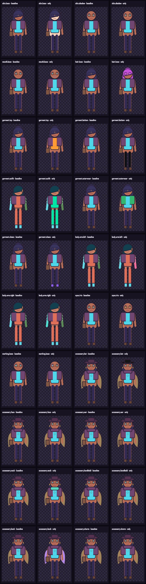
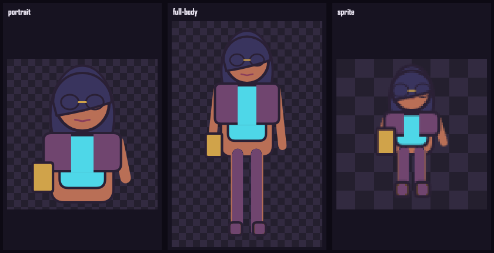

Wide
Three-column workspace
Catalog, preview, and inspector remain simultaneously understandable.
TASK-005 · Creator Studio
The main Pages route is the reference Studio. It uses the public resolver and Canvas renderer while reusable history, catalog, compatibility, and recipe state remain framework-neutral.
TASK-012 + 019 + 020 · Palette rendering
Each pair uses the same equipped character. The right image changes only the named role; linework, alpha, and unrelated regions remain authored. Open the JSON for exact changed-pixel counts.

TASK-014 · Output projections
Portrait omits the lower body, bottoms, and shoes. Sprite omits the mouth. Full-body remains complete, and the canonical recipe hash is unchanged before and after all three renders.

Concise review script
Wide
Catalog, preview, and inspector remain simultaneously understandable.
Narrow
Responsive order keeps the rendered character above browsing and detail controls.
Reduced motion
All editing and validation functions remain usable when motion is disabled.
Current owner decisions